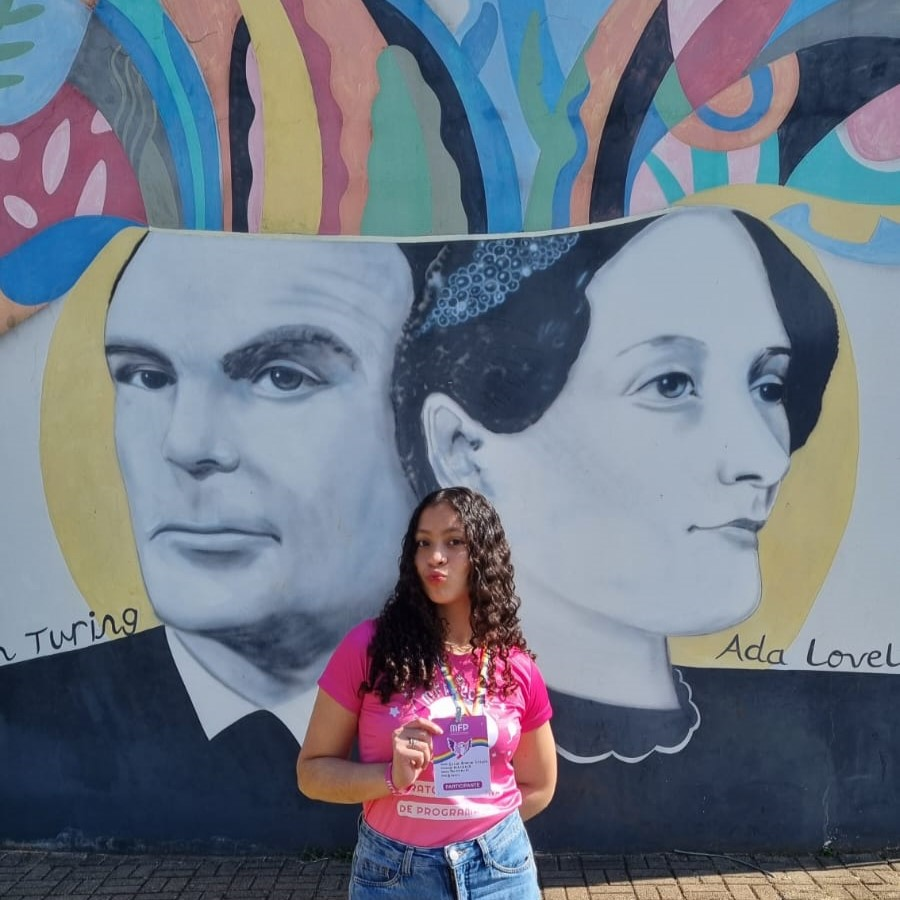

Elisa Araujo Cristo
Nome completo: Elisa Araujo Cristo
Idade: 19 anos
Data de nascimento: 26/01/2006
Nacionalidade: Brasileira |
Sobre mim
Sou graduanda em Ciência e Tecnologia na Universidade Federal do ABC e formada em Informática para
Internet pelo Instituto Federal de São Paulo – Campus Avançado São Miguel Paulista. Minha trajetória
acadêmica é marcada pela participação em projetos de pesquisa, extensão, intercâmbio e iniciativas
estudantis. |
Últimas Atualizações
Fixado
Link para o Currículo Lattes: Clique aqui
Fixado Link para o LinkedIn: Clique aqui Fixado Link para o GitHub: Clique aqui Postagem em Publicações LABORATÓRIO DE TECNOLOGIAS SOCIAIS: APLICAÇÃO E REAPLICAÇÃO DA TECNOLOGIA SOCIAL NO AMBIENTE ESCOLAR Apresentação e artigo para o 15º CONGRESSO DE INOVAÇÃO, CIÊNCIA E TECNOLOGIA DO IFSP (CONICT 2024). Clique aqui para acessar a postagem Postagem em UFABC Síntese crítica e autoavaliação dos aprendizados Na aula final da disciplina Estrutura e Dinâmica Social, realizada em 04 de agosto de 2025, realizamos uma atividade de reflexão e autoavaliação... Clique aqui para acessar a postagem Postagem em UFABC Crise climática e contemporaneidades O que eu sabia sobre a crise climática é que são mudanças no clima da Terra, causadas principalmente pela ação humana, que gera o aquecimento global... Clique aqui para acessar a postagem Postagem em Projetos Grêmio Estudantil Elza Soares O grêmio é uma instância fundamental para a instituição, promovendo integração, diálogo e protagonismo estudantil. Para mim, foi uma parte essencial... Clique aqui para acessar a postagem |
ProjetosPublicaçõesPrêmiosUFABCGaleria |